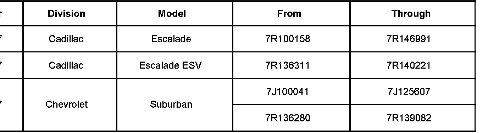
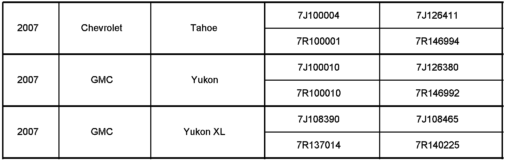
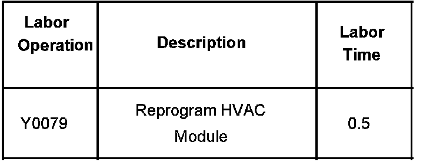

Campaign - HVAC Module Reprogramming
Bulletin No.: 06024BDate: April 25, 2006
PRODUCT ENHANCEMENT
Subject:
06024B - Product Enhancement for Inventory and Customer Vehicles - HVAC Module Reprogram - Expires with Base Warranty
Models:
2007 Cadillac Escalade, Escalade ESV
2007 Chevrolet Suburban, Tahoe
2007 GMC Yukon, Yukon XL
Supercede:
THE SERVICE PROCEDURE IN THIS BULLETIN HAS BEEN REVISED. PLEASE REVIEW THE NEW PROCEDURE IMMEDIATELY. DISCARD ALL COPIES OF BULLETIN 06024A, ISSUED MARCH 2006.
THIS PRODUCT ENHANCEMENT INCLUDES VEHICLES IN DEALER INVENTORY AND CUSTOMER VEHICLES THAT RETURN FOR ANY TYPE OF SERVICE, AND WILL EXPIRE AT THE END OF THE INVOLVED VEHICLE'S NEW VEHICLE LIMITED WARRANTY PERIOD.
Purpose
This bulletin provides a service procedure to reprogram the HVAC module on certain 2007 Cadillac Escalade and Escalade ESV; Chevrolet Suburban and Tahoe; and GMC Yukon and Yukon XL vehicles. On rare occasions, when the vehicle is started at or below 32°F (0°C), the HVAC controls and display may become inoperative.
This reprogramming should be completed as soon as possible on involved vehicles currently in dealership/retailer inventory and customer vehicles that return to the dealer/retailer for any type of service during the New Vehicle Limited Warranty coverage period.
Vehicles Involved


A list of involved vehicles currently in dealer inventory is attached to the Administrative Message (GM US) or Dealer Communication (Canada) used to release this bulletin. Customer vehicles that return for service, for any reason, and are still covered under the vehicle's base warranty, and are within the VIN breakpoints shown. should be checked for vehicle eligibility in the appropriate system listed below.
Important:
Dealers are to confirm vehicle eligibility prior to beginning repairs by using GMVIS. Not all vehicles within the above breakpoints may be involved.
Service Procedure
Tech 2(R) Remote Programming Method for HVAC Module
Note:
Before reprogramming, please check the battery condition to prevent a reprogram error of the driver's seat module due to battery discharge. Battery voltage must be between 12 and 16 volts during reprogramming. If the vehicle battery is not fully charged, use jumper cables from an additional battery. Be sure to turn off or disable any system that may put a load on the battery such as automatic headlamps, daytime running lamps, interior lights, heating, ventilation, and air conditioning (HVAC) system, radio, engine cooling fan, etc. A programming failure or control module damage may occur if battery voltage guidelines are not observed.
The ignition switch must be in the proper position. The Tech 2(R) prompts you to turn ON the ignition, with the engine OFF. DO NOT change the position of the ignition switch during the programming procedure unless instructed to do so.
Make certain all tool connections are secure, including the following components and circuits:
^ The RS-232 communication cable port
^ The connection at the data link connector (DLC)
^ The voltage supply circuits
DO NOT disturb the tool harnesses while programming. If an interruption occurs during the programming procedure, programming failure or control module damage may occur.
DO NOT turn OFF the ignition if the programming procedure is interrupted or unsuccessful. Ensure that all control module and DLC connections are secure and the TIS terminal operating software is up to date.
Program the HVAC Module to the latest calibration part number. Be sure to use the Remote Tech 2(R) programming method using both the Tech 2(R) with CANDi module and the TIS terminal.
Important:
Use data version 3.5 or later, broadcast to dealers, and available on TIS2WEB, March 19, 2006 (US), March 22, 2006 (Canada); and on TIS CD-ROM version 4.0/ 2006 which was mailed to dealers beginning April 18, 2006. To complete this service procedure, the Tech 2(R) must also be updated to release 26.002 or greater. If you cannot access the calibration, call the Techline Customer Support Center and it will be provided.
HVAC Module Programming
1. Verify the battery charge of 12 to 16 volts. The battery must be able to maintain the charge during programming. Use an additional jump battery if necessary.
2. Use the normal "request method" through "Service Programming System" to request information from the vehicle.
3. At the Techline Terminal, enter TIS SPS programming system.
4. Select Tech 2(R) from the "Select Diagnostic Tool" window.
5. Select Reprogram ECU from the Select Programming Process window.
6. Select Vehicle from the "Select ECU Location" window.
7. Select Next to go to the "Preparing for Communication" instruction screen.
8. Select Next to view the Validate Vehicle ID Number screen. If the vehicle ID number does not appear on the screen, manually insert the VIN into the VIN window of the Validate Vehicle ID Number screen.
9. Select Next to view the "Supported Controllers" screen.
10. Select HVAC Control Module from Supported Controllers window.
11. Select Next to view the "Select Programming Type" window.
12. Select Normal from the Select Programming Type window.
13. Select Next to view the "Service Programming System Calibration Selection" screen.
14. Select Next to view the Summary screen.
15. Verify that the current and selected calibration information is displayed on the Summary screen.
16. Select Next to download the calibration to the Tech 2(R).
17. Back at the vehicle, enter "Service Programming Systems".
18. Select Program ECU and follow the on-screen instructions.
19. When programming is complete, do the following:
19.1. Turn the Tech 2(R) OFF.
19.2. Turn the ignition switch OFF.
20. Wait 30 seconds.
21. Turn the ignition switch to ON with the engine OFF.
22. Go into Diagnostics and check for DTC codes.
23. Clear all codes.
Claim Information

For vehicles repaired under this product enhancement, use the table.

Disclaimer